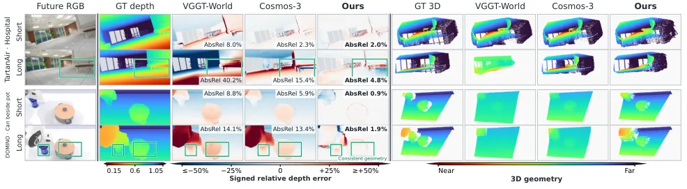
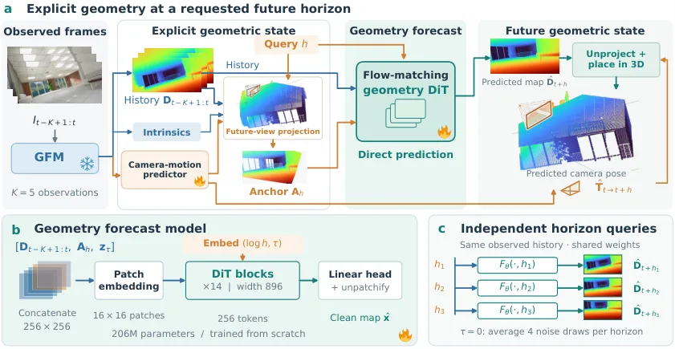

GeoWM：在显式几何空间中进行高效直接世界建模
GeoWM: Efficient Direct World Modeling in Explicit Geometry
用冻结几何基础模型把 RGB 帧变成“几何历史”，再由一个从零训练、约 206M 参数的时域条件化流匹配 transformer 直接预测指定未来时刻的深度（不递归 rollout）；四个数据集上短时域降深度误差 4–58%、长时域 7–48%，且任意时域推理延迟恒定为 0.11 s（比最强基线约省 98% 时间）。
AbsRel
AbsRel short→long
latency
TFLOPs
作者、单位与技术谱系 · Research context
作者与单位
研究脉络
- DUSt3R / VGGT（Wang et al., 2024 / 2025）方法基座关系：以冻结的 VGGT-1B 作为把观测 RGB 转成几何的骨干，直接沿用其点图/深度/相机输出。[论文 §II、§IV-B]
- VGGT-World（2026）/ Cosmos-3（2026）/ DINO-Foresight问题上游关系：分别是潜空间、视频与特征空间世界模型的代表，是本文要改进并对照的范式。[论文 §I、§II、§IV-C]
- Flow Matching（Lipman et al. 2022; Esser et al. 2024）方法上游关系：预测头的训练目标采用流匹配形式，并以 clean-target 预测 + 速度空间加权 L1 实现。[论文 §III-C、§III-D]
合作网络
- Huawei Noah's Ark Lab（加拿大）同单位署名Mehrdad Noori → Dongfeng Bai关系：共同署名（同机构）[arXiv 首页署名]
- 对 VGGT-1B 与 Cosmos-3/VGGT-World 的技术依赖GeoWM → VGGT-1B、Cosmos-3、VGGT-World、DINO-Foresight关系：明确技术依赖（非共同署名）[论文 §II、§IV-B、§IV-C]
作者与单位来自论文首页署名，四位作者同属华为诺亚方舟实验室（加拿大），未发现跨机构署名边；谱系依据正文引用标注为“基于来源的解读”。合作边仅记录共同署名与公开技术依赖，未推断导师或师生关系。
方法本质拆解 · What actually changed
是不是微调？
骨干是冻结的 VGGT-1B（不训练），被训练的是从零开始的时域条件化流匹配 transformer（约 206M 参数），它直接在深度图上工作、没有自编码器或 tokenizer、除冻结骨干外不加载任何预训练权重。训练用 AdamW、恒定 lr 1e−4、batch 16、bf16、梯度裁剪 1.0、100k 步、EMA 0.999，单卡数小时完成。因此不是微调，而是“冻结几何前端 + 从零训练一个轻量几何预报器”。
有没有额外约束？
新增约束作用在条件输入与目标函数上：条件为观测深度历史 D_{t−K+1:t} 与由预测相机运动 warp 得到的锚 A_h 的通道拼接，时域 h 与流时间 τ 通过 adaLN-zero 注入每层（时域调制每个 block）；训练目标用逆深度加权 L1（w_p∝m_p/max(D_{t+h,p},d_min)，TartanAir 因近距场景省略该权重）对齐相对误差，并对每时域用训练集固定归一化常数 σ_h。约束作用在深度预测变量与坐标系约定上（训练真值按最后观测帧尺度对齐），不改变冻结骨干。
推理/后端到底做了什么？
推理没有递归 rollout：相机运动预测器把观测相对运动一次外推到 h，观测深度被 warp 成锚，transformer 在 τ=0 单步前向、平均 N=4 个噪声样本后反归一化即得该 h 的深度图；不同时域可批量并行、彼此独立。没有任何对齐、匹配或全局 BA/因子图后端，也不需要 ODE 积分；代价是每个时域固定几次网络评估、与实际时域距离无关。
方法本质是什么？
本质是：把世界模型的状态从“像素/潜特征”换成“显式几何（深度/点图）”，并把预测时域做成输入而非步数，从而让未来几何可被独立、直接地查询。它改变的是“几何预报中误差如何随预测时域累积”的不确定性——同一观测历史为所有时域提供条件，不需要中间预测回灌，误差与算力都不随时域增长。没有引入新的几何优化后端，也没有改动冻结骨干。
输入为最近 K 帧 RGB 与请求的未来时域 h；改变的位置是用冻结几何基础模型得到几何历史、把预测相机运动 warp 出锚、并让时域经 adaLN 调制一个从零训练的流匹配 transformer；合并动作是以观测深度+锚为条件、τ=0 单步（N=4 平均）直接回归该时域深度而不递归；直接效果是每个时域独立精确预测、延迟与算力不随时域增长（0.11 s / 12 TFLOPs）。

动机与问题Motivation
动机与问题
论文指出三类世界模型的共同缺陷：视频模型（如 Cosmos-3）预测未来帧、再重建几何，其光度目标与 3D 结构耦合松散、动态物体易被错置；潜空间模型（如 VGGT-World）预测冻结几何模型的 token 再解码，解码会放大误差、且自回归 rollout 会累积误差；两者的成本都随时域增长。几何基础模型（DUSt3R、VGGT 等）能高精度描述“给定帧”，但本质是观测式的，无法预测几何将如何变化。作者据此提出：能否让世界模型的状态就是显式几何本身，并且每个未来时域都能被独立、直接地查询？
方法Method
方法总览
给定最近 K 帧，冻结的 VGGT-1B 给出每帧深度与相机位姿；一个轻量相机运动预测器把观测到的 K−1 个相对运动外推到任意未来时域 h（旋转用 ridge 回归、平移用小型回归器，参数量仅数万）；再用这个预测位姿把最后一张观测深度前向投影到未来视角，得到锚 A_h=W(D_t, T̂_{t→t+h})。一个流匹配扩散 transformer 以“观测深度历史 D_{t−K+1:t} + 锚 A_h”为条件（K+1 个通道与噪声目标拼接、256×256 分成 16×16 patch、投影为 256 token），在 adaLN-zero 中注入流时间 τ 与 log h，从而逐层受时域调制。模型直接从零训练、无自编码器/tokenizer，除冻结骨干外不依赖任何预训练权重。
关键技术细节
目标函数是 clean-target 预测 + 速度空间加权 L1 的流匹配：插值 z_τ=τx+(1−τ)ε，网络预测 x̂=F_θ(z_τ,τ,h,c_h)，逐像素权重 w_p∝m_p/max(D_{t+h,p}, d_min) 用逆深度对齐相对误差准则，避免远处结构淹没近处；流时间取 logit-normal（u~N(−0.8,0.8²)），并固定一部分样本为 τ=0 以显式训练推理用的纯噪声态。推理在 τ=0 单步前向、平均 N=4 个独立噪声样本后反归一化，无需 ODE 积分（消融显示单步优于 Euler 多步）。训练上，每个样本是把观测窗口配一个均匀采样的时域，AdamW、恒定 lr 1e−4、weight decay 0.01、batch 16、梯度裁剪 1.0、bf16、100k 步、权重 EMA（decay 0.999），单卡数小时即可训练完成。

实验Experiments
实验设置
四个数据集覆盖驾驶、航空与操作：KITTI（10 Hz 驾驶、LiDAR 真值；138 训练序列、13 验证序列共 3257 窗口，stride 2、20 个时域 0.2–4.1 s）、Cityscapes（17 Hz 立体，500 验证窗口、5 个时域 0.18–0.88 s）、TartanAir（仿真航空、18 环境、留出 37/369 轨迹共 7314 窗口、20 个时域 1–20 帧）、DOMINO（操作、静态头挂相机，35 任务/5 本体，用 SAPIEN 重渲染得真值深度，23 训练任务留出 1 本体，四个测试集含 37360 窗口）。每数据集窗口 K=5 帧。指标分三族：深度 AbsRel 与 δ1（KITTI/Cityscapes/TartanAir 逐图 median-scale，DOMINO 用真尺度）、相机 ATE/RTE/RRE（Umeyama 对齐）、3D 点云 Chamfer 距离 CD（相似对齐、5 mm 体素降采样、20k 点）。对照为视频模型 Cosmos-3（16B）、潜空间模型 VGGT-World、特征模型 DINO-Foresight，以及不做预测的 copy-last。
实验数字与比较
表 I（四数据集）：GeoWM 在每个时域组都取得最低 AbsRel 和全时域最低 CD。KITTI 全时域 AbsRel 14.2（Cosmos-3 16.6、VGGT-World 22.5、copy-last 19.2），长时域 17.4 vs Cosmos-3 21.2；TartanAir 长时域 40.1 vs Cosmos-3 57.5、首帧领先 1.6、长时域领先 17 点；DOMINO 全域把误差较其他方法约减半（9.6 vs Cosmos-3 20.5）。VGGT-World 在 KITTI/TartanAir 中段起反而低于 copy-last，正是自回归累积误差。相机运动：三个运动相机数据集上 GeoWM 轨迹误差全部最低（ATE KITTI 0.23 vs Cosmos-3 0.34、Cityscapes 0.02 vs 0.08、TartanAir 0.13 vs 0.28）。泛化（表 II）：DOMINO 未见任务/本体上每格 AbsRel 与 CD 最低，相对 copy-last 全时域误差在“见任务见机器人”降 54%、仅未见机器人 45%、仅未见任务 37%、两者皆未见 31%。成本（表 IV）：GeoWM 12 TFLOPs、206M（forecaster）+1.36B（骨干），任意时域 0.11 s；VGGT-World 1116 TFLOPs 且 1.9→36.9 s（h=1→20）、Cosmos-3 3362 TFLOPs 且 4.9→9.3 s。
消融/失败边界
表 III（KITTI）:（1）预测空间——在冻结前端特征空间回归（PCA 到每层 128 分量）全时域 AbsRel 17.6、加解码深度损失降到 16.0，但仍不如直接在显式几何预测的 14.2，且显式几何每帧 token 数只有其一半。（2）几何条件——完全去掉深度条件化后误差比 copy-last 还差且几乎不随时域改善（全时域 28.6 vs 19.2）；把相机补偿的锚换成“直接复制最后一张观测深度”在短时域损失最大，保留锚但去掉历史则在长时域损失最大，只用最后一张深度图两者皆失、短时域与全时域都比单缺一项更差；把锚的预测平移按 α 缩放，误差曲线呈 V 形、最小值在 α=1（即真实预测运动），完全去掉平移在 KITTI 损失 10.7%、TartanAir 18.0%。（3）预测策略——用同一权重与窗口做一步递归 rollout，长时域 AbsRel 达 38.9（直接预测 17.4）、甚至落后 copy-last；两步块 rollout 只补回部分差距。（4）观测帧数 K=2/3/4 逐级改善且在 K=3 已获大部分增益；读出消融显示 τ=0 单步优于 Euler 2/4/8 步。失败边界：预测误差随不稳定性上升，DOMINO 物体边界仍偏平滑；rollout 在 KITTI 达直接预测误差的 2.3 倍。
局限与迁移Limitations & Transfer
局限与待核验
作者明确承认与隐含的边界：方法可视为预测“显式几何”的收益，但论文主要报告相对误差指标，DOMINO 之外多为 median-scale 深度，绝对尺度只在操作数据集上验证；相机运动预测器虽轻量但为独立模块，其误差会传播到锚与最终预测（论文用 α 缩放消融间接说明锚依赖预测视角）；递归 rollout 被明确否证，但模型本身仍是短时域窗口条件化、未见“超长时域一致性”与回环/闭环场景的专门评测。我们待核验项：(a) 骨干换用更弱几何基础模型时深度预测的退化曲线未报告，泛化性待核验；(b) 单卡“数小时”训练的具体硬件未在正文明确，复现成本待核验；(c) 论文未提供官方代码链接，端到端复现细节需以全文与后续开源为准；(d) 表格中 VGGT-World 在部分数据集是作者自训练，其对照强度与超参需以官方 recipe 核对。
与你研究路线的关系
可迁移模块有三处：第一，“把预测时域做成模型输入、每个时域独立直接查询，而非递归步数”的接口设计，可搬到你的融合/预报里——把某外部先验/几何预报改成“一次前向、按时域条件化”，可同时降低误差累积与算力。第二，“用轻量相机/运动预测器外推视角，再把观测几何 warp 到预测视角作为锚”的两段式条件化，与你在 GNSS/INS 中做运动先验传播、并把先验投影到预测状态再作为约束的思路同构，可作为“先验锚定 + 神经网络补全”的最小模板。第三，逆深度加权 L1 权重与 τ=0 单步读出这类工程细节，对以相对误差为准则的几何预测是低成本高收益的选择。下一步实验建议：(1) 在自建几何/深度预报任务上做最小 A/B——递归 rollout vs 时域条件化直接预测，量化长时域误差与算力差异；(2) 复现 α 缩放消融，检验你的运动先验在多大扰动下仍能提供有效锚；(3) 把冻结几何骨干换成你手头可用的前馈模型，检验该“显式几何世界模型”范式的骨干敏感性。

